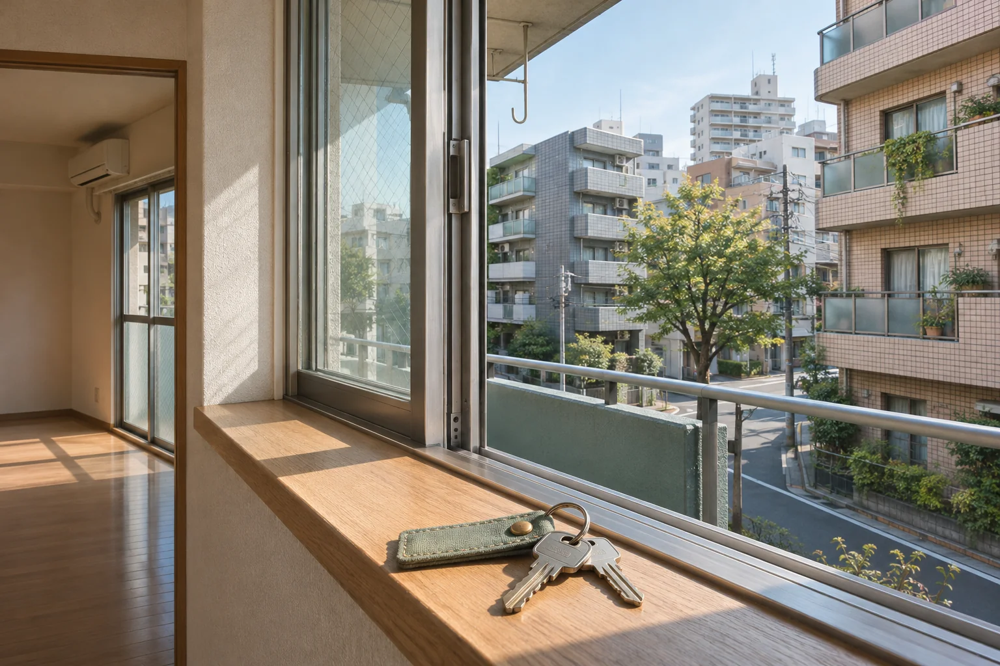

iPhone・iPad用アプリ
この部屋で光回線は使える？
内見した物件の住所から、フレッツ光・auひかり・NURO 光が使えるかを各社の公式サイトで調べ、物件ごとに残しておけるアプリです。
App Store 配信準備中

アプリで何が分かる？
質問を選ぶと画面が切り替わります。矢印キーでも選べます。
郵便番号から建物を選ぶだけ
7桁入力するとフレッツ光の住所候補が出ます。町名・番地・建物を選ぶと、3社の提供状況をそれぞれの公式サイトで確認します。
- 日本国内の住所に対応。フレッツ光の東日本・西日本は住所から切り替えます。
- 物件によっては部屋番号などの追加入力が必要です。

プランごとの最大速度と工事の目安
各社のプランの下り・上りの最大速度と、部屋まで回線を引く工事の目安が分かります。下りの最大速度はAからFのランクで表します。
| ランク | 下りの最大速度 |
|---|---|
| A | 10Gbps以上 |
| B | 1Gbps以上〜10Gbps未満 |
| C | 500Mbps以上〜1Gbps未満 |
| D | 100Mbps以上〜500Mbps未満 |
| E | 100Mbps未満 |
| F | 設備未導入／詳しい状況確認が必要速度の値ではありません |

調べた物件を履歴で見比べる
建物名・住所・調べた日時と3社の結果が、物件ごとに並びます。各社の公式サイトの判定画面もページ全体の画像で残るので、内見のあとや申し込みの直前に見返せます。
結果と画像は、お使いのiPhone・iPadの中に保存されます。

最後はどこに確かめる？
アプリの結果は下調べ用で、契約や工事ができること、実際の通信速度を保証するものではありません。申し込む前に、次の窓口で確かめてください。
- その部屋で契約できるか
- 申し込めるプランも含めて、各回線業者へ。
- 工事ができるか
- 可否と内容は回線業者へ。賃貸物件では管理会社や大家さんの承諾も必要な場合があります。
- 実際の通信速度
- アプリの速度はプランの最大値です。建物の配線、端末、時間帯によって変わります。
- 料金や契約条件
- 最新の内容を、各社の公式サイトや窓口で。
質問と回答
Fランクと表示されたら、どうすればいいですか？
Fは速度ではなく、「設備未導入」または「詳しい状況確認が必要」という判定です。その部屋で使えるかどうかは、回線業者にお問い合わせください。
回線業者が出しているアプリですか？
いいえ。3社から独立したアプリです。契約や工事の申し込みは、各社の窓口で行ってください。
ほかにご不明な点は、サポートページからお問い合わせください。